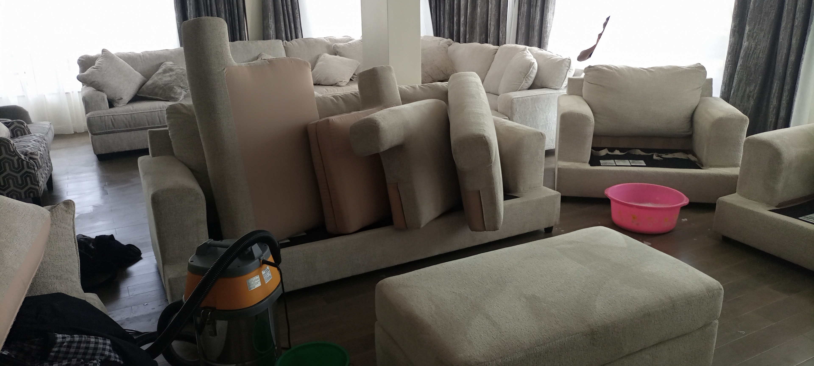

Why a clean home
After a demanding day at work, coming home to a tidy, immaculate, and fragrant space is truly rewarding. Imagine the joy of stepping into a home where everything is arranged perfectly, the floors shine, and the air is clear of dust and disorder. This sense of serenity not only refreshes your mind but also boosts your spirit, making your home the perfect place.
The benefits of working at home are greater with a clean environment. A well-ordered space doesn’t just aid you concentrate better—it can boost your attitude, reduce stress, and make your workday much more enjoyable. After all, it’s easier to focus when you’re not distracted by unclean dishes heaping up in the sink, smudged windows blocking the sunlight, or that rogue dust bunny rolling across the floor like a tumbleweed on dry plains.
Let’s be real—managing household chores can feel overwhelming at times, but it’s essential for a comfortable and organized home. Juggling work, social engagements, and personal time often makes cleaning feel like just another daunting task on your list. This is precisely why hiring a professional house cleaning service can transform your life, giving you more time to focus on what truly matters.
This document presents an overview of the premier house cleaning services available in Nakuru City, emphasizing the comprehensive range of services offered. These services include deep cleaning, regular maintenance, and specialized options such as upholstery and carpet cleaning. Furthermore, this analysis will address the prevalence of house cleaning services in Nakuru, as well as the expected standards of service quality. Additionally, it will provide insights into the typical costs associated with these services.
If you’re interested in the benefits of hiring a professional cleaner, you’re in the right place. Let’s explore why this investment is worthwhile!

.jpg)


Reasons to Consider a Naxclean Service
Cleaning your home can be overwhelming, especially if you procrastinate or lack the time and energy. As clutter and dust accumulate, it can become a daunting mess. A house cleaning service can alleviate this stress and restore order and comfort to your space.
We often overlook the fact that hiring help for housework is a viable option. In today’s world, it’s quite common for working individuals to find affordable cleaning services.
Hiring help doesn’t have to be a last resort. There’s nothing wrong with not wanting to do housework, even if you have the time. You might prefer to spend your free time on hobbies, personal projects, or simply having fun, and that’s perfectly acceptable.
Ultimately, despite what previous generations have taught us, housework shouldn’t be viewed as a noble act to take pride in — it’s just maintenance that needs to be done by someone, and that someone doesn’t necessarily have to be you if you can afford it.
Moreover, hiring a house cleaning service benefits not only you but also your family. With more free time, you can enjoy moments with your loved ones, and you'll be providing them with a clean and safe living environment.
While pathogens like bacteria, mold, and fungi are often invisible to the naked eye, they can lead to various health issues. Regular house cleaning can give you peace of mind by eliminating these harmful microorganisms.
These compelling reasons provide you with the assurance needed to choose Naxclean Services confidently.
Will you come to my house to quote?
We’re excited to offer you a personalized quote for our exceptional
cleaning services right in your home or an estimate over the phone.
Don’t hesitate to call or text +254-726-616-588 to schedule your appointment, or reach out to us on WhatsApp!
Is Naxclean Services registered?
Yes, we are fully registered!
We provide complete coverage for any breakage or damage to your property
during our cleaning services. Plus, any accidents or injuries that occur
are covered under Naxclean. Your safety and satisfaction are our priority.
Do you supply the cleaning products and equipment?
Absolutely! We carry all the essential cleaning supplies, from floor
and window cleaners to surface sprays, mold removers, vacuums, scrubbers,
mops, and wipes. We want you to feel comfortable, so if you prefer we use
your equipment instead, we’re more than happy to accommodate that choice!
Will the same cleaning staff come each time?
We strive to send the same cleaners to ensure your comfort and trust. However,
there may be occasions when a different team member is needed. You can feel confident,
knowing that every crew member is fully briefed on your specific needs, and all work is
supervised by the manager to guarantee quality and consistency.
Is your service pet-friendly?
Absolutely! We recognize that pets are beloved family members. That's why we use non-toxic a
nd eco-friendly products, ensuring a safe environment for your furry friends on any surface we
clean. For peace of mind, please request our eco-friendly cleaning option tailored for pet owners.
How long is an average cleaning service?
The duration of a typical cleaning service largely depends on the condition of your home.
On average, you can expect the cleaning to take between 4 to 8 hours. To get a more accurate
estimate, simply multiply the number of bedrooms in your house by 2 hours. For example, if you
have 3 bedrooms, the cleaning will likely take around 6 hours. Investing this time ensures a
thorough and satisfying clean that revitalizes your space!
When will I be charged? Do you accept cash or M-Pesa payment?
Rest assured, you will only be charged once we have successfully completed your cleaning service
to your satisfaction. And yes, we happily accept both cash and M-Pesa payments for your convenience!